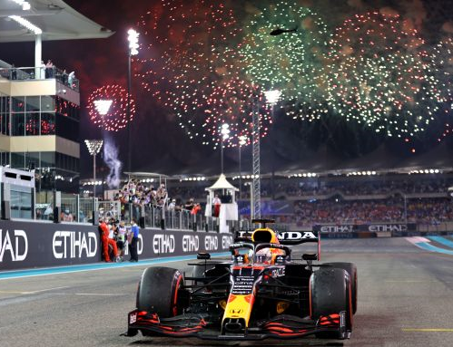

Max Emilian Verstappen è nato a Hasselt il 30 settembre 1997, è un pilota automobilistico olandese con cittadinanza belga, attivo in Formula 1 con la Red Bull Racing, campione del mondo di Formula 1 nel 2021. Talento precoce, ha debuttato in Formula 1 nel 2015 al volante della Toro Rosso, per poi essere promosso alla Red Bull Racing a metà 2016, team con il quale è diventato il più giovane pilota ad aver vinto una gara del campionato del mondo di Formula 1 a soli 18 anni, 7 mesi e 15 giorni. Nel 2021, all'età di ventiquattro anni, si è aggiudicato il titolo di campione del mondo, divenendo il primo olandese a trionfare nella massima competizione. Il suo numero di gara è il 33,ma nel 2022 ha scelto di utilizzare il numero 1 in quanto campione del mondo in carica.  Suo padre Jos ha gareggiato in Formula 1, mentre sua madre Sophie Kumpen, di nazionalità belga, ha corso come pilota di kart; quest'ultima è nipote di Paul Kumpen e cugina di Anthony Kumpen, anch'essi piloti automobilistici professionisti. Verstappen, che corre con licenza dei Paesi Bassi, possiede sia la nazionalità belga sia quella olandese, ed è cresciuto nella cittadina belga di Bree. Nel 2014 partecipa a dei test con una vettura di Formula Renault 3.5 e viene scelto come nuovo membro della Red Bull Junior Team. Dopo aver presenziato nel box della Scuderia Toro Rosso durante il Gran Premio del Belgio per apprendere le dinamiche della squadra, il 3 ottobre 2014, all'età di 17 anni e 3 giorni, ha esordito in un fine settimana di Formula 1 nelle prove del venerdì del Gran Premio del Giappone. Nel corso della stagione partecipa in altre due prove libere, nel Gran Premio degli Stati Uniti e nel Gran Premio del Brasile, mettendosi particolarmente in evidenza in quest'ultimo appuntamento. Inizia la seconda stagione in Formula 1 con un decimo posto in Australia, dietro al compagno di squadra Carlos Sainz Jr, dopo che in qualifica aveva ottenuto il quinto riscontro cronometrico. Conclude il Gran Premio del Bahrein in sesta posizione e quello della Cina in ottava. Durante la gara a Sochi è vittima di un guasto alla vettura mentre era in sesta posizione. Il 5 maggio 2016 viene promosso in Red Bull Racing al posto di Daniil Kvjat, retrocesso in Scuderia Toro Rosso. All'esordio con la squadra austriaca, in Spagna, ottiene il 4º posto in qualifica. Il giorno dopo, complice il ritiro delle due Mercedes di Hamilton e Rosberg, riesce a vincere il Gran Premio, resistendo nel finale di gara alla pressione di Kimi Räikkönen. Con la vittoria in Spagna diventa il più giovane pilota ad aver vinto una gara del campionato del mondo di Formula 1. Nel 2021 Max viene affiancato alla guida della Red Bull da Sergio Perez. In questo anno Max vincerà il suo primo campionato del mondo a seguito di una accesissima battaglia con Lewis durata per l'intera stagione con alti e bassi. Nel 2022 Max correrà per difendere il suo titolo mondiale.